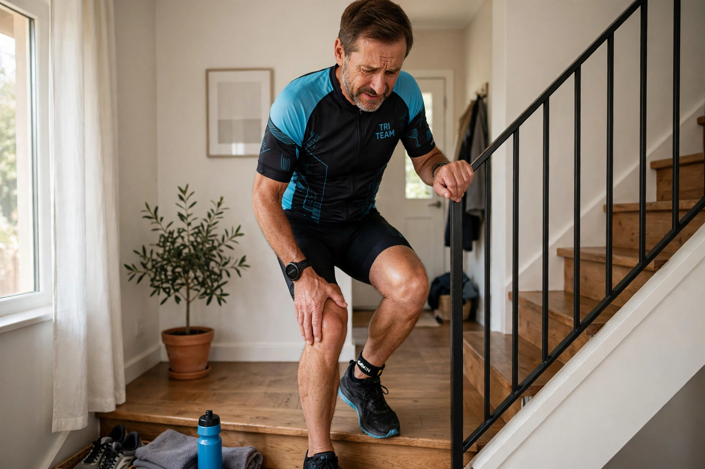
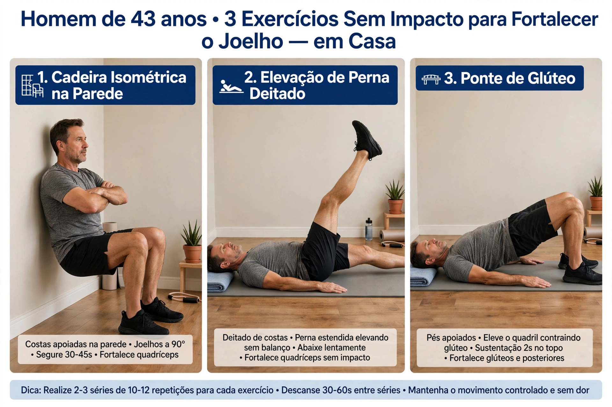

Dor no Joelho Depois dos 40?
Por Que Acontece e Como Fortalecer em Casa

Subir escada dói? Joelho estala ao agachar? Depois dos 40 isso é comum, mas não é normal ignorar. A boa notícia: na maioria dos casos, a solução não é parar de treinar, é fortalecer do jeito certo.
1. As 3 Causas Mais Comuns Depois dos 40
- 1. Perda de músculo que protege o joelho: Quadríceps e glúteo enfraquecem. O impacto que era do músculo vai direto pra articulação.
- 2. Cartilagem mais ressecada: Menos líquido sinovial = mais atrito. Por isso estalo e rigidez de manhã.
- 3. Anos de impacto errado: Corrida sem preparo, leg press com joelho a 90º e agachamento profundo sem mobilidade.
2. O Que EVITAR se Seu Joelho Dói
Se você sente dor, faça dessa forma por 30 dias:
- Corrida na rua / esteira
- Agachamento profundo com peso nas costas
- Subir e descer escada como forma de cardio
Não é pra sempre. É pra desinflamar enquanto fortalece.
3. 3 Exercícios Para Fortalecer em Casa (Sem Impacto)
1. Cadeira Isométrica (Vasto Medial)
Encoste as costas na parede, desça até 45 graus, segure 30-45 seg. 4 séries. Esse é o músculo que segura sua patela.
2. Elevação de Perna Esticada
Deitado, uma perna dobrada, a outra estica e sobe 40cm. Segura 2 seg. 3x15 cada lado. Zero impacto no joelho.
3. Ponte de Glúteo
Glúteo fraco = joelho pra dentro. 3 séries de 20 repetições todos os dia fortalece e tira pressão do joelho.
Faça esse exercíco + elástico. Em 3 semanas a dor ao subir escada irá diminuir muito.

4. Apoio Nutricional Para Articulações
Treino fortalece o músculo. Mas quem treina depois dos 40 precisa pensar no conforto articular no dia a dia.
Eu uso como apoio na rotina produtos com glucosamina, condroitina, MSM e colágeno tipo II - nutrientes que ajudam a manter o conforto e a mobilidade articular.
Conclusão: Joelho Forte Não Vem de Repouso
Depois dos 40, joelho dolorido pede músculo, precisei fazer 2 cirurgias para recuperar o joelho direito, e hoje consigo correr nadar, pedalar e lutar por ter aprendido a fazer o fortalecimento do joelho da maneira correta. Fortaleça quadríceps e glúteo 4x por semana e a dor que você sentia será história.
Força e disciplina.
— Velho Guerreiro